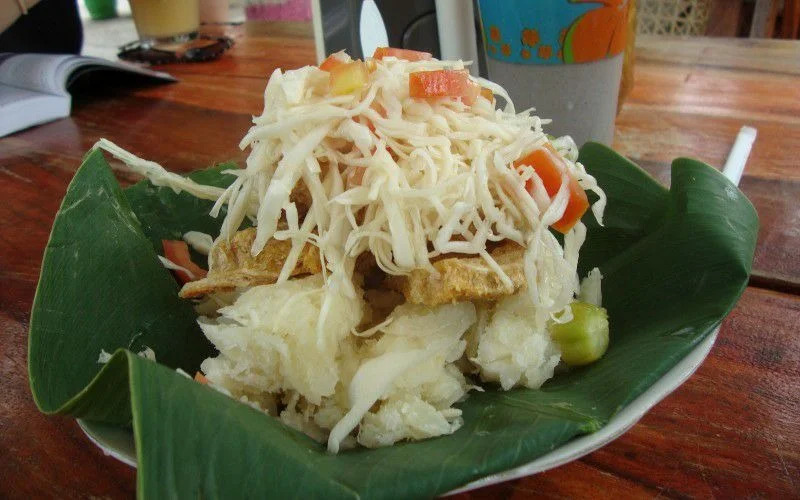

Vigoron
Vigoron is a traditional Nicaraguan dish that consists of yuca (cassava) topped with chicharrón (fried pork rinds) and a tangy cabbage salad. It is a popular street food and is often enjoyed as a snack or light meal.

Description:
Vigoron is a delicious and simple dish that is a staple in Nicaraguan cuisine.
It is often served as a snack or light meal and is known for its unique combination
of flavors and textures.
Ingredients:
- 2 cups of yuca (cassava), peeled and boiled
- 1 cup of chicharrón (fried pork rinds)
- 1 cup of cabbage, shredded
- 1 small onion, chopped
- 2 tablespoons of vinegar
- 1 tablespoon of vegetable oil
- Salt and pepper to taste
Instructions:
- Boil the yuca in salted water until tender. Drain and set aside.
- In a separate pan, heat the vegetable oil over medium heat. Add the chopped onion and sauté until soft.
- Add the shredded cabbage to the pan and cook for a few minutes until it wilts slightly. Season with vinegar, salt, and pepper to taste. Remove from heat and set aside.
- To assemble the dish, place a portion of boiled yuca on a plate. Top with chicharrón and then add the cabbage salad on top.
- Serve immediately and enjoy your Vigoron!
Go to Home